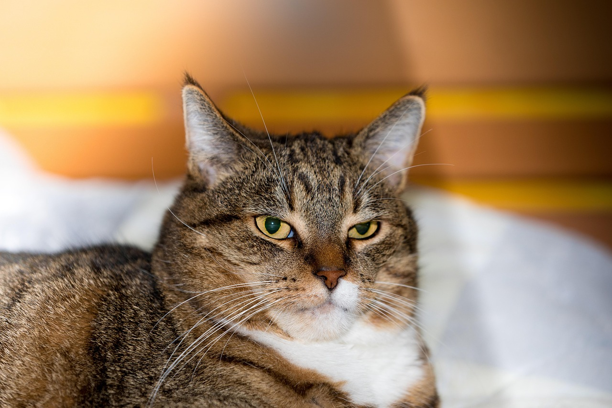

Maine Coon
The Maine Coon is one of the largest domesticated cat breeds. They are friendly, affectionate, and great companions!
A small domesticated carnivorous mammal with soft fur, a short snout, and retractable claws. It is widely kept as a pet or for catching mice, and many breeds have been developed.
The domestic cat (Felis catus) is a small, furry pet that is loved by people around the world. Known for their playful nature and independent spirit, these cats come in many colors and patterns, including tabby, black, white, and orange
The Maine Coon is one of the largest domesticated cat breeds. They are friendly, affectionate, and great companions!
Siamese cats are known for their striking blue eyes and sleek coat. They're very vocal and social!
Persian cats are known for their luxurious long fur and calm temperament. They love lounging around!
“There are no ordinary cats.” — Colette